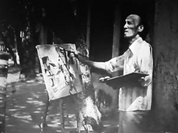
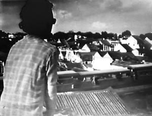
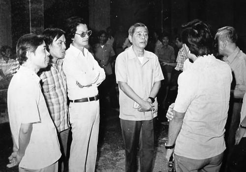

“Bộ phim này chỉ có thế thôi à các đồng chí? Nếu nó chỉ có thế này thôi thì tại sao lại cấm? Hay là vì trình độ tôi có hạn mà tôi không hiểu được?”
☆
Có lẽ phải trở lại một chút để nói về việc làm bộ phim này.
...Dựng phim xong, cho đến trước khi hòa âm tôi vẫn chưa biết đặt tên phim thế nào, chỉ biết chắc chắn phải có hai chữ Hà Nội. Bí quá, mông lung quá. Rồi trời lại xui đất lại khiến thế nào đó, tôi cầm tờ báo Nhân Dân lên như hành động vô thức vì chẳng bao giờ đọc tờ báo này, lật lật xem qua. Trang 3 có bài báo của một nhà văn đương đại Mỹ (quên mất tên) viết về Hemingway. Tôi chăm chú đọc vì tôi thích Hemingway, hơn nữa khi học ở Nga đã cùng các bạn người Cu Ba đã tham gia làm phim về ông.
Ðọc xong chẳng thấy có gì giống Hemingway trong đầu tôi cả. Tôi thấy khó chịu. Nhưng khi đọc lại cái tên bài báo, thấy cha này láu cá, viết rằng “Hemingway trong mắt tôi”.
Chẳng thể cãi nhau với hắn được: Hắn nói “trong mắt tôi” kia mà! Như một ánh chớp lóe lên, một tích tắc, tôi thầm nghĩ: Thằng cha này biếu mình một cái tên rất độc.
Tôi đọc rành rọt thành tiếng: Hà-Nội-Trong-Mắt-Ai.
Hà Nội trong mắt ai? Hà Nội trong mắt họa sĩ Bùi Xuân Phái; Hà Nội trong mắt nghệ sĩ ghi-ta Văn Vượng; Hà Nội trong mắt vua Lý Thái Tổ khi viết Chiếu Dời Ðô; Hà Nội trong mắt nhà thơ Hy Lạp Ludemit và cứ thế người ta nhìn và ngâm nghĩ về Hà Nội, Hà Nội trong mắt ai cũng được!
Sự láu cá của tôi hơn hẳn hắn ta là cái chắc; tôi đạo chữ là cái chắc, nhưng tôi đạo tài đấy chứ!
Và cũng nên nói thêm về cái chữ “ai”, chữ ai đa nghĩa, nó không chỉ là đại từ nhân xưng như qui, who, кто, ... ở tiếng nước ngoài mà chữ ai còn có thể liên tưởng tới ai oán, bi ai...
☆

Hà Nội trong mắt họa sĩ Bùi Xuân Phái

...và trong mắt nghệ sĩ ghi-ta Văn Vượng
Giờ đây khi thì trả lời phỏng vấn, khi thì trên diễn đàn, tôi đã nói lời gan ruột: tôi chẳng hào hứng gì phải nhắc lại cái thời làm phim “Hà Nội Trong Mắt Ai”, tôi cũng không muốn xem lại bộ phim và kể lại những chuyện lằng nhằng vinh nhục xảy ra sau đó nữa.
Bởi nhiều lẽ:
- Chuyện này ai cũng biết rồi, nói đi nói lại thành lắm lời.
- Ba mươi năm qua rồi, xem lại thấy ngượng về nghề, về technique, về thủ pháp, chẳng có ấn tượng gì đáng kể, chỉ là những cảnh đơn sơ lắp ghép lại, được dẫn dắt bởi lời bình mang tính ẩn dụ.
- Cuốn phim quay bằng phim nhựa ORWO color 35mm màu sắc phai nhạt, xước xát, chẳng còn một bản nào nghiêm chỉnh đủ tiêu chuẩn kĩ thuật.
- Phần kết phim đã bị sửa một cách ngớ ngẩn. Thời ấy trong một tình thế lúc nào cũng có thể bị bắt, tôi đã phải thêm vào một đoạn cuối cảnh quảng trường Ba Ðình vào những ngày lễ lạt. Toàn bộ đoạn ấy xuất hiện trong phim nằm ngoài ý muốn của tôi.
- Và đặc biệt là, ba mươi năm trước, khi làm “Hà Nội Trong Mắt Ai”, xã hội tuy có nhiều ngang trái nhưng nó không tồi tệ như bây giờ.
Tôi muốn nói thêm rằng bộ phim này nổi tiếng không phải vì thông tuệ hoặc hay ho tài giỏi gì mà vì nó gây ra sự tranh cãi ồn ĩ một thời gian dài. Người ta đã chen nhau xếp hàng mua vé đi xem chỉ vì nó... bị cấm, bị đưa lên thớt, bị qui thành vấn đề chính trị: chống đảng; dạy đảng cầm quyền; kêu gọi mọi người xuống đường; sau lưng đạo diễn là một lực lượng chính trị...
Chung qui nó nổi tiếng vì sự đa nghi thái quá, mẫn cán thái quá của một số người có chức quyền thời đó.
☆
Thế rồi phải mấy năm sau, ngày 15 tháng 12 năm 1986 Ðại hội VI của Ðảng Cộng Sản Việt Nam khai mạc. Ông Nguyễn Văn Linh được bầu là Tổng Bí thư.
Ðây là một đại hội vô cùng quan trọng, nó quyết định cho sự đổi mới và đã nêu ra những khẩu hiệu:
“Nhìn thẳng vào sự thật, phản ánh đúng sự thật, đánh giá đúng sự thật”
“Hãy cởi trói cho văn nghệ sĩ”
“Văn nghệ sĩ hãy tự cứu mình trước khi trời cứu”
“Ðừng bẻ cong ngòi bút, phải viết cái điều mình nghĩ”.
Nhiều học giả cho rằng đó là những khẩu hiệu rất cách mạng trong tình hình Việt Nam thời điểm đó nhưng với nhân loại thì đó là một chuyện “xưa như trái đất”.
Chua chát quá, nói thật mà lại được coi là một cuộc cách mạng! Mà mới bắt đầu thôi, chẳng biết kéo dài được bao lâu...
Chủ trương đổi mới đặt ra vấn đề xem xét lại toàn bộ các vấn đề của xã hội Việt Nam trong đó có khoa học xã hội, văn hóa văn nghệ, một vấn đề không lớn so với những vấn đề đối nội, đối ngoại, phát triển kinh tế...
Có một nghị quyết vô cùng quan trọng đối với giới văn nghệ sĩ trí thức lúc đó là Nghị quyết 05 của Trung ương Ðảng Cộng sản Việt Nam về lãnh đạo, quản lý Văn hóa Văn nghệ với nội dung sửa đổi, chấn chỉnh lề lối, cách thức lãnh đạo trong lĩnh vực Văn hóa Văn nghệ.
Từ trước đến giờ các nghị quyết của Ðảng chỉ là dân chúng phải làm gì, đảng viên phải làm gì, chứ không bao giờ có nghị quyết nói rằng lãnh đạo Ðảng cần phải sửa chữa điều gì. Lúc bấy giờ ông Trần Ðộ là cánh tay phải của Tổng Bí thư Nguyễn Văn Linh. Chính ông thảo ra Nghị quyết này.
Tháng 5-1987 ông Nguyễn Văn Linh trực tiếp xem phim “Hà Nội Trong Mắt Ai”. Ông rất ngờ ngàng vì những đồn thổi bấy lâu nay về bộ phim. Ông thành thật hỏi chúng tôi:
- Bộ phim này nó chỉ có thế thôi à các anh?
- Vâng, bộ phim nó chỉ có thế thôi ạ!
- Nếu chỉ có thế này thôi thì tại sao lại cấm. Hay vì trình độ có hạn mà tôi không hiểu được?
☆
Câu nói giản dị ấy làm tôi xúc động và bị ám ảnh mãi tận sau này. Tiếp đó ông đã cho tổ chức chiếu lại “Hà Nội Trong Mắt Ai” ở Hội trường Nguyễn Cảnh Chân, mời những người có trọng trách, những người lãnh đạo Văn hóa văn nghệ, phụ trách các Hội văn học nghệ thuật đến xem và bỏ phiếu thuận hay chống.
Tất cả đã bỏ phiếu thuận. Có nghĩa là bộ phim sẽ được ra công chúng.
Ngày 26 tháng 9 năm 1987, Văn phòng Trung ương đã ra văn bản yêu cầu Ban Văn hóa Văn nghệ, Ban Tuyên huấn, Bộ Văn hóa công chiếu phim “Hà Nội Trong Mắt Ai”.
Ngày 7, 8 tháng 10 năm 1987, ông Nguyễn Văn Linh tổ chức một cuộc họp với hơn 200 văn nghệ sĩ trí thức lớn ở Hội trường Nguyễn Cảnh Chân.
Mở đầu hội nghị, ông nói: “Các đồng chí, hôm nay mời các đồng chí đến đây để các đồng chí bộc bạch, kể cho nghe tất cả những quan tâm, những sự trăn trở trước đường lối, trước những cách thức đối với văn hóa văn nghệ để chúng ta có thể làm việc một cách tốt hơn với nhau. Tôi đến đây để nghe chứ không phải đến đây để nói...”
Sau đó ông ngồi xuống và bắt đầu nghe mọi người nói. Thời kỳ đó còn có những cây đại thụ như Nguyễn Khắc Viện, Cù Huy Cận, Nguyễn Ðình Thi,... tất cả những văn nghệ sĩ trí thức lớn nhất của phía Bắc, các nhà nghiên cứu đều có mặt.
Buổi họp đầu tiên (7-10-1987) chuông reo, nghỉ giải lao, mọi người tản ra sân. Tôi đang nói chuyện với nhà văn Nguyễn Khải. Trong bộ phim “Chuyện Tử Tế”, tôi có dẫn những câu chữ của Nguyễn Khải nhưng tôi không nói hẳn ra là của ông, như đoạn phim trước khi chuyển sang cảnh ông thầy giáo bán rau, người đông nghịt, chen chúc... “ Một nhà văn từng viết, con người là một sinh vật không bao giờ chịu sống thúc thủ, nó luôn muốn vươn tới cái tuyệt vời, cái vô biên, cái vĩnh cửu là những mục tiêu mãi mãi không bao giờ đạt tới ”. Thời gian đó “Chuyện Tử Tế” chưa được công chiếu, tôi mới chỉ thì thầm cảm ơn ông Nguyễn Khải.
Lưu Quang Vũ đến bên và nói: “ông Nguyễn Văn Linh bảo mình gọi cậu ra nói chuyện một tý”.
Tôi ra gặp và chụp ảnh chung với ông Nguyễn Văn Linh, Trần Ðộ, Lưu Quang Vũ, Nguyễn Văn Hạnh... Ông Nguyễn Văn Linh nói với tôi:
- Ðến bây giờ tôi đã hiểu tại sao người ta cấm bộ phim ấy.
☆

Ðến bây giờ tôi đã hiểu tại sao người ta cấm bộ phim ấy.
(Từ trái qua: các ông Nguyễn Văn Hạnh, Lưu Quang Vũ, Trần Văn Thủy, Nguyễn Văn Linh, người không rõ, Trần Ðộ)
Có thể thấy việc này đã ám ảnh ông đến như thế nào (ông xem bộ phim này từ 5-1987!) Ông nói:
- Tôi đề nghị anh nên làm tập 2.
Nghe ông nói vậy, tôi đã nghĩ đến phải làm cái gì rồi.
Khi đó, bộ phim “Chuyện Tử Tế” đã làm xong cũng để đấy bởi vì bộ phim “Hà Nội Trong Mắt Ai” vẫn bị cấm. Không có cách gì để quảng bá “Chuyện Tử Tế” hoặc mang bộ phim này ra để duyệt, để phát hành và công chiếu được. Chuyện đó là không tưởng. Còn bây giờ là thời cơ!
Tan họp, tôi về hãng phim gặp họa sĩ Trịnh Quang Vũ, nhờ anh viết thêm cho tôi chữ “Tập 2” dưới cái tên “Chuyện Tử Tế”, ngụ ý đây là tập 2 của “Hà Nội Trong Mắt Ai” được làm theo ý của Tổng Bí thư. Tôi rất biết làm thế là không phải với ông Nguyễn Văn Linh, nhưng tình thế buộc tôi phải hành xử như vậy. Tôi nghĩ việc cầm cân nảy mực quốc gia đại sự là việc của bề trên; còn việc làm phim như thế nào là bổn phận của chúng tôi. Như vậy là nhờ cái vía của ông Linh mà “Chuyện Tử Tế” ra đời, tồn tại và lang thang khắp nơi khắp chốn...